Laplace transform is useful in equation solving. By definition, Laplace transform transforms a function  defined on into another function by calculating the convolution
defined on into another function by calculating the convolution
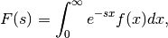
or symbolically,
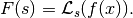
A table of important Laplace transforms can be found on mathworld.wolfram.com. Here we steal some of the commonly used.
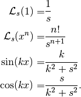
It can also be applied to differentials.
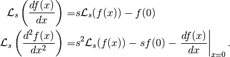
Laplace Transform of Differentials
The general form is
Laplace transform is useful in solving differential equations because it transforms many equations into fractions and polynomials. A simple example is the harmonic osicllators. The equation of motion is

which is transformed into
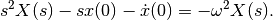
The solution to it is
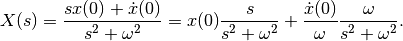
We can spot sin and cos from the solution,
This example is too simple sometimes naive. However, it shows the spirit.
Caveats
Laplace transform has a lot of counter intuitive expressions.
Laplace transform of product of two functions 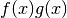 is NOT the product of the Laplace transforms 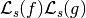. However, if one of the functions is a constant, say 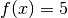, we can prove that the Laplace transform of 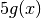 is .
The product of two Laplace transforms is the Laplace transform of a convolution
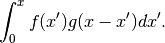
Small s corresponds to large x, due to the nature of the exponential suppression in Laplace transform. For example, for small argument x, the function 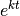 becomes almost 1, meanwhile, the Laplace transform of the function 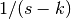 becomes 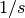 under large s. We can see that the two limits are consistant since the Laplace transform of 1 is .
Laplace transform and Fourier transform are quite similar to each other. In fact, they are both Z transform. A Z transform is a generalization of Laplce transform and Fourier transform, which is defined as
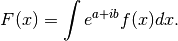